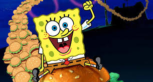
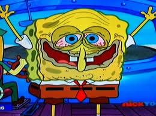
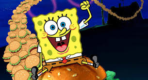
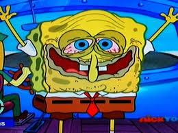

A square yellow sponge named SpongeBob SquarePants lives in a pineapple with his pet snail, Gary, in the city of Bikini Bottom on the floor of the Pacific Ocean. He works as a fry cook at the Krusty Krab. During his time off, SpongeBob has a knack for attracting trouble with his starfish best friend, Patrick. Arrogant octopus Squidward Tentacles, SpongeBob's neighbor, dislikes SpongeBob because of his childlike behavior.
 


